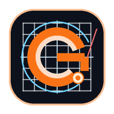

Escala: Grelha = 10mm x 10mm
X: 0.00 mm | Y: 0.00 mm
| Nome da Fresa | Tipo | Diâmetro | Z Seg. | Avanço XY | Avanço Z | Passo Z | Stepover | RPM | Acções |
|---|
Carrega ficheiros CAD, vetores 2D ou imagens para maquinação na mesa CNC.
Executa o Gcoded como aplicação nativa dedicada, rápida e 100% offline.

Gerador CAM de Percursos e Simulador 3D para Máquinas CNC
A Inteligência Artificial extrai a volumetria 3D real da fotografia (rosto, relevo e profundidade). Clica em Colocar na Mesa para avançar.